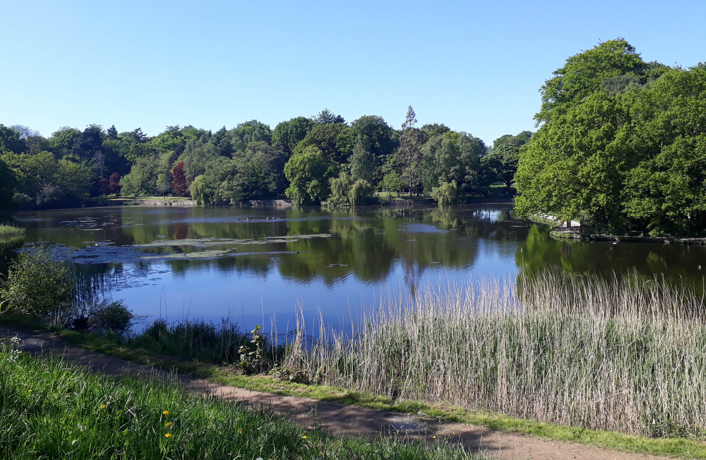

Workshop: Practical and Structural Model Theory
Leeds, July 25-29, 2022


Workshop: Practical and Structural Model Theory
|
|
|
|
- on the occasion of the 60th birthdays of Ya'acov Peterzil and Sergei StarchenkoScope:
The workshop is planned to take place during the second week of the 3-week program Unimod 2022. |
 |
Model theory of o-minimal structures:
- Alessandro Berarducci (University of Pisa)
- Annalisa Conversano (Massey University)
- Mario Edmundo (University of Lisbon)
- Jana Marikova (University of Vienna)
- Dave Marker (University of Illinois at Chicago)
- Charles Steinhorn (Vassar College)
Interactions and applications of o-minimality:
- Matthias Aschenbrenner (University of Vienna)
- Lou van den Dries (University of Illinois at Urbana-Champaign)
- Gareth Jones (University of Manchester)
- Chris Miller (Ohio State University)
- Jonathan Pila (University of Oxford)
- Patrick Speissegger (McMaster University)
Model theoretic generalizations:
- Elisabeth Bouscaren (Université Paris-Sud)
- Artem Chernikov (University of California at Los Angeles)
- Philipp Hieronymi (University of Bonn)
- Ehud Hrushovski (University of Oxford)
- Rahim Moosa (University of Waterloo)
- Alf Onshuus (Universidad de Los Andes)
- Tom Scanlon (University of California at Berkeley)
- Katrin Tent (University of Münster)
- Boris Zilber (University of Oxford)
University of Leeds. More information to follow.
You may register here by April 15, 2022.
The workshop is sponsored by ASL. Student members of the ASL may apply for student travel awards following the guidelines mentioned here.